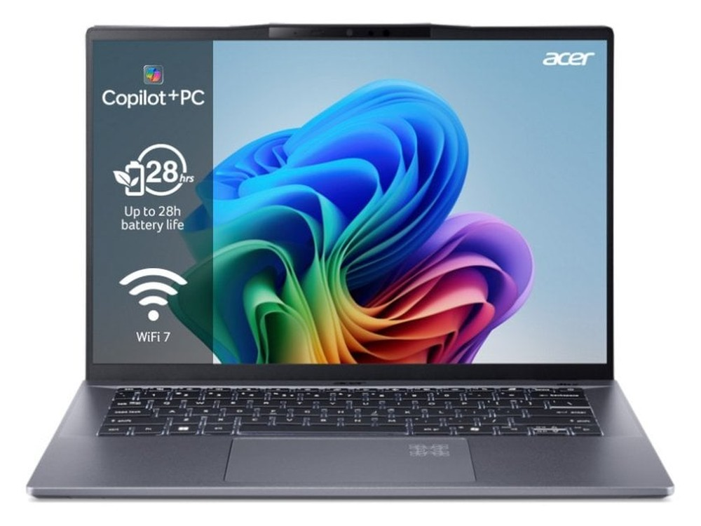

Ficha técnica
| Procesador | Qualcomm Snapdragon X1P-42-100 |
|---|---|
| Gráficos | Adreno integrada |
| Memoria | 16 GB |
| Almacenamiento | 1 TB SSD |
| Pantalla | 14" IPS WUXGA · 1920 × 1200 |
| Peso | 1,30 kg |
| Autonomía | 12 h según el fabricante |
| Sistema operativo | Windows 11 |
| Precio | 823 € orientativo |
Para quién es
Su mejor baza es la portabilidad, con 90 de 100. Para jugar se queda en 32 de 100. Pesa 1,30 kg. Cuesta 823 €, en la mitad de la tabla de precios.
- Encaja si lo que más te importa es llevarlo encima a diario, y el presupuesto llega a 823 €.
- Busca otra opción si lo que prima es el gaming: aquí saca 32 de 100.
Notas por uso
Escala de 0 a 100. En el comparador se recalculan según el perfil que elijas. La nota global es 71 / 100, la media de los cuatro apartados.
Alternativas por precio
Los tres modelos del catálogo que más se acercan a su precio:
- HP Pavilion Aero 13−24 €
- Lenovo IdeaPad Slim 5 13−24 €
- MacBook Neo (A18 Pro)−24 €
Compáralo con otro modelo
Abre el comparador con este portátil ya cargado y enfréntalo a cualquiera de los 34.
Abrir el comparador